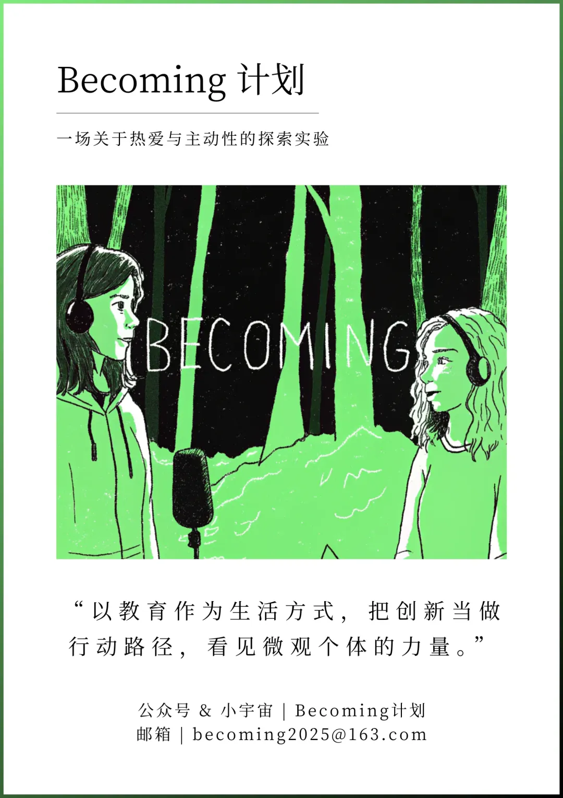
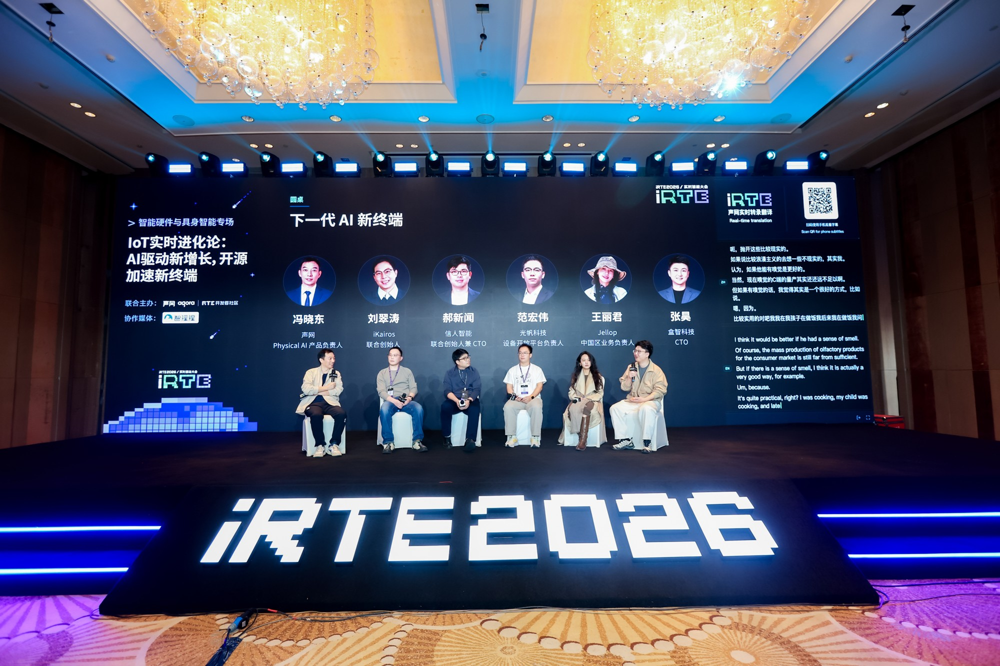
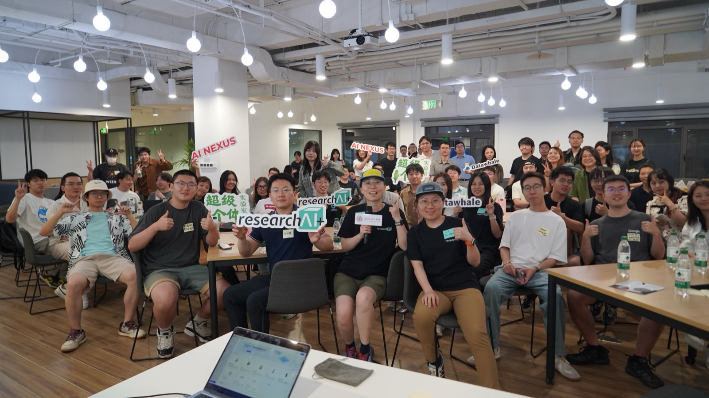
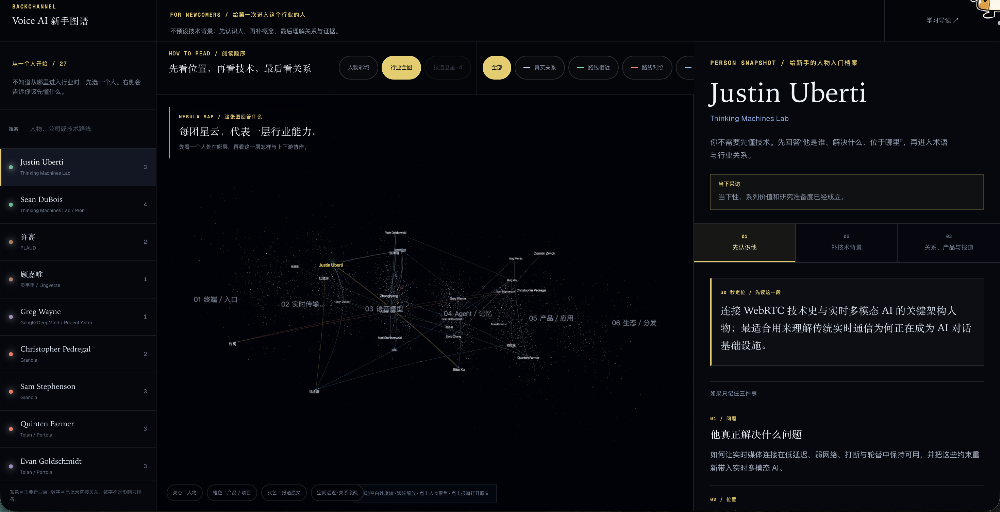
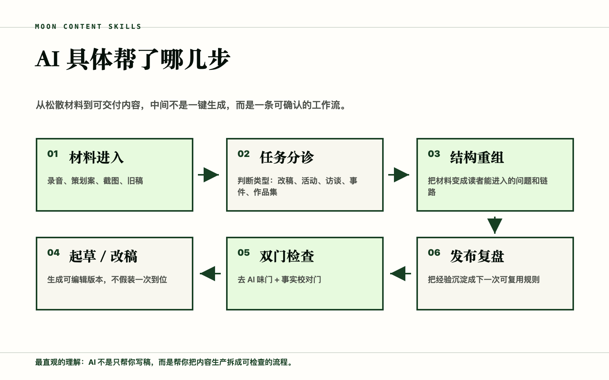

创造发生
的地方.
编者的话 / EDITOR’S NOTE
先走进现场，
再讲述变化。
我把田野作为方法，走入 AI 教育、创业与社区现场。通过持续参与、深度访谈与写作，记录技术变化中具体的人：他们如何创造、寻找方向，也如何面对自由的代价。
这本作品刊把人物、活动与协作放在一起，呈现我如何研究、连接与讲述，以及这些工作如何延伸为可以继续使用的方法。
月亮 / Moon一个人，
如何开始？
在产品、事业与生活的选择背后，
看见具体的人。

人物深访 / BECOMING
不是一个身份，
而是一段成为的过程。
通过播客对谈与微型生命史，追问一个人如何在成长、试错与选择中，找到愿意长期投入的事业。
乐乐 / AI 教育创业者 ↗从小城生活与成长中的留白，理解她为什么走向 AI、教育与游戏。Tim / Artflow.ai 创始人 ↗从连续创业谈到生活本身，理解一个创业者如何作出选择。另一组人物 / 观猹人物
在非标准路径上，
重新开始行动。
记录早期 AI 创造者如何做产品、验证想法，以及重新安排自己的生活。
从一个开源项目开始
Redink 开源创造者的产品实践。
阅读人物 ↗02 / 杨晨白天做保安，
夜里用 AI 创作
从大厂运营，到重新安排生活。
阅读人物 ↗从技术议题，
到现场对话。
六场论坛，一次从研究、策划到内容沉淀的协作。

在 iRTE 2026，我参与了六场技术论坛的议题策划与内容协作，涵盖对话式 AI、音视频 AI、实时基础设施，以及智能硬件与具身智能等前沿方向。
从研究技术趋势、嘉宾背景与实际应用案例出发，我与主办方共同梳理论坛的核心议题和讨论框架，将不同领域的技术进展转化为具体、值得探讨的问题。
围绕论坛议题，我参与嘉宾沟通与协作，完成论坛介绍、圆桌讨论提纲及主持材料，并配合会前彩排与现场推进，推动策划内容转化为真实发生的行业对话。
大会结束后，我继续梳理演讲与圆桌讨论中的关键观点、实践案例及不同立场，完成系列技术论坛回顾的策划、撰写与编辑，让现场交流沉淀为可持续传播和引用的内容资产。
超级交子孵化器 / 品牌内容生态负责人
好的故事，
可以一起长出来。
AI 时代，创作者如何与技术、产品实践者共同工作？
在超级交子孵化器，我负责品牌内容生态建设，并参与推进面向年轻创作者的内容协作与人才培养机制。我们正在回应一个问题：当 AI 改变创造的方式，创作者与技术、产品实践者如何共同工作，让值得被看见的人、项目与探索被理解？
从品牌叙事、AI Builder School 招募，到现场手记与「AI Builder 来信」，我参与内容策划、写作与编辑，让创作者走近真实项目，在观察、研究与对话中理解实践，也让实践者的经验、判断与探索成为可以共同讨论的故事。
围绕 Creator Studio，我们正把共创者招募、真实项目协作、内容编辑与方法交接连接起来。受到 a16z New Media Fellowship 等实践的启发，我们正探索让创作者与技术、产品实践者共同成长的协作机制，为科技行业培养下一代创意内容叙事者。
品牌内容与系列栏目样本；各篇具体创作与协作署名见原文。
为科技行业培养
下一代创意内容叙事者。
相遇之后，
还会发生什么？

蓝驰 BOOMING HUB / 深圳
围绕一张桌子，
找到可以继续的问题。
作为深圳站活动 Owner，我协调跨团队与在地创业者网络，统筹筹备、现场执行与会后内容沉淀。
阅读 AI × 硬件闭门交流回顾 ↗把经验，
留在下一次工作里。

01 / 研究
项目与人物发现 ↗
从公开信息、人物候选到访谈假设，持续追踪谁在解决什么问题，以及他们与谁发生连接。

02 / 编辑
内容创作工作流 ↗
把录音、策划案、截图与旧稿依次完成任务分诊、结构重组、起草、事实核对与发布复盘。
人的故事仍能被访问。进入线上展馆 ↗